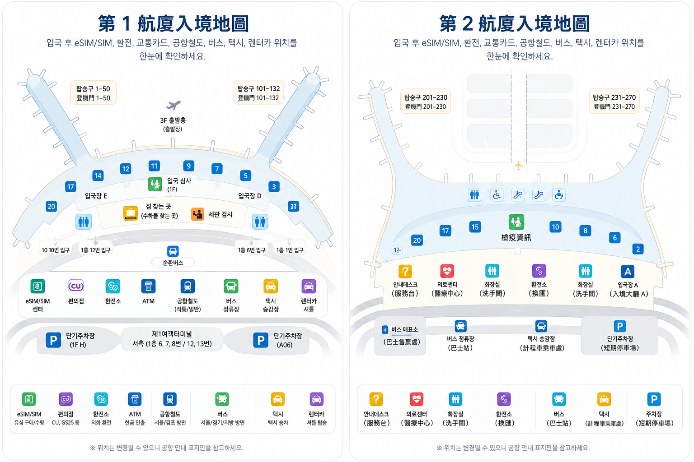

入境韓國
如果這是最後一段航班，接下來要入境韓國，請依循抵達或入境審查指標。通常先通過入境審查，再領取托運行李、通過海關，最後進入入境大廳。
入境審查行李提領海關入境大廳
只要知道該看哪些指標，抵達仁川機場後的動線並不複雜。如果要入境韓國，通常依序沿抵達指標前往入境審查、行李提領、海關，再進入入境大廳。
如果要轉搭其他班機，請不要直接跟著一般入境動線走。應依循轉機指標，以及自己行程適用的指示。

航廈安排可能變動，共掛班號航班尤其需要留意。電子機票與機場即時抵達航班查詢，比儲存下來的航空公司清單可靠。
如果這是最後一段航班，接下來要入境韓國，請依循抵達或入境審查指標。通常先通過入境審查，再領取托運行李、通過海關，最後進入入境大廳。
入境審查行李提領海關入境大廳
如果只在仁川轉機，請依循轉機指標，不要直接跟隨一般抵達旅客的動線。轉機流程會因航空公司、航廈，以及托運行李是否直掛下一班飛機而不同。
若有任何不確定的地方，請依航空公司的轉機指示辦理，不要認定所有轉機都必須通過韓國入境審查。
對要入境韓國的旅客來說，動線通常很單純。步行距離會隨登機門與航廈不同，但主要步驟的順序相同。

下飛機後，依循抵達或入境審查指標。轉機指標會帶往不同流程，只有要繼續搭下一班飛機時才應跟著走。
備妥護照，以及自己入境身分適用的文件。不同護照、簽證或居留身分適用的規定不盡相同；出發前請查閱韓國官方說明，不要直接照搬其他旅客的清單。
韓國針對原已適用暫時豁免措施的國家，將 K-ETA 豁免期限延長至 2026 年十二月 31 日。免申請 K-ETA，不代表一定免填入境申報。
持有有效 K-ETA 的旅客免填入境申報。使用 K-ETA 暫時豁免措施的旅客，則仍可能需要依自身身分提交 e-Arrival Card。
官方 e-Arrival Card 免費，可在抵達韓國前三天內提交。官方網站也提供導引工具，協助判斷是否需要填寫。
官方 e-Arrival Card 網站不收費。若有網站聲稱販售韓國入境卡，請勿在該網站輸入付款資料。
通過入境審查後，查看機場螢幕上自己航班的行李轉盤，領取托運行李後再前往海關。
如果行李箱沒有出現，先確認轉盤仍對應自己的航班。若確定遺失或受損，請在仍位於行李提領區時，聯絡航空公司或行李服務櫃檯。隨身保留報到時拿到的行李條與航班資料。
領取行李後，依循海關指標前往出口。
若攜帶可能需要申報的物品，請查閱韓國海關規定，不要套用其他國家的規則。超過免稅額度的物品及管制物品可能需要申報。
如果沒有需要申報的物品，請依機場標示走適用的海關通道。
通過海關、進入入境大廳後，入境程序就完成了。
進市區前，可能還要處理行動上網、儲存韓文住宿資料、確認備用付款方式，或決定如何前往住宿處。這些抵達後的實用步驟，另整理於 仁川機場入境大廳指南。
不必背下各航廈固定使用的航空公司清單。確認實際航班編號所標示的航廈，再於落地後用地圖掌握方向。
第 1 航廈是獨立的旅客航廈，有自己的入境審查區、行李提領區與入境大廳。請依實際抵達航班的指標前進，不要照著儲存的航空公司清單走。
第 2 航廈有自己的入境設施，與第 1 航廈之間沒有開放旅客步行的路線。若進入公共區域後需要往返航廈，請依機場現行的航廈間交通指引移動。
這張地圖有助於了解入境審查、行李提領、海關與入境大廳的相對位置。即時登機門、行李轉盤或設施資訊，請以機場現場指標與航班資訊為準。

進入入境大廳，就表示入境程序已完成。接下來要處理什麼，取決於行程：讓手機連上網路、保存韓文住宿地址、準備備用付款方式，以及選一條帶著行李也走得通的路線。
這些抵達後的實用步驟，請接著看 仁川機場入境大廳指南 的說明。
如果只剩如何前往住宿處還沒決定，可以參考機場交通指南，直接比較 AREX、機場巴士、計程車與預約接送一路到住宿處的完整行程。
查看電子機票，或到仁川機場官方抵達航班頁面查詢航班編號。這比依賴固定的航空公司清單更可靠，尤其是共掛班號航班。
是的，如果要入境韓國，通常依序是入境審查、行李提領、海關，最後進入入境大廳。要轉搭其他班機的旅客，則應依循轉機指標與航空公司的指示。
先確認行李轉盤仍對應自己的航班。若行李遺失或受損，離開行李提領區前，請聯絡航空公司或行李服務櫃檯，並備妥行李條與航班資料。
不行。第 1 航廈與第 2 航廈是不同建築，兩者之間沒有開放旅客步行的路線。若需在公共區域換航廈，請依機場官方的航廈間交通指引移動。
抵達入境大廳後再決定。適合的方式取決於實際住宿地點、抵達時間、行李量與同行人數。另有機場交通指南，可比較 AREX、機場巴士、計程車及預約接送一路到住宿處的完整行程。
請依循轉機指標與航空公司的指示。確認轉機航廈、可用轉機時間，以及托運行李是否直掛下一班飛機，不要直接認定自己應走一般入境路線。
入境規定與機場運作可能變動。若某項資訊會影響自己的行程，請查閱以下官方來源。